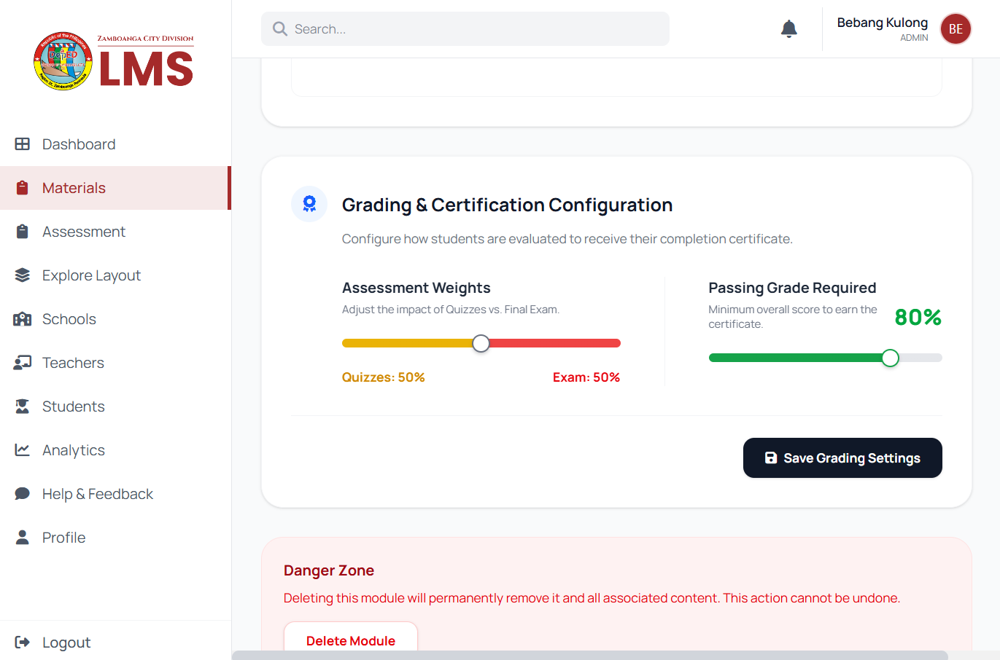
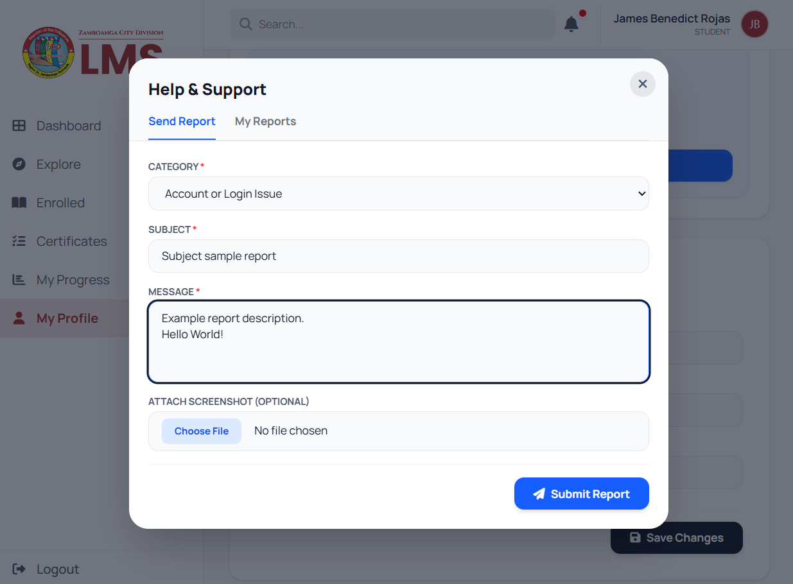

Finalizing Educational Experience & Admin Controls
JB
James Benedict
March 31, 2026
Week 6
This week, we achieved a significant 65% completion milestone for our LMS project. My primary focus was finalizing the core educational flow within the Study Module. I ensured a seamless transition for students between content sections, interactive quizzes, and formal exams. I also successfully integrated in-system PDF viewing and video playback capabilities, ensuring that learners have all the resources they need directly within the platform.

On the administrative side, I implemented the Grading & Certification Configuration. This tool allows instructors to customize exam weights and set specific passing grade requirements, providing the flexibility needed for different subjects. To improve engagement and support, I also developed a Notification System for classroom invitations and a new "Help & Feedback" tool that allows students to report technical issues directly to the administration.


We also tackled some front-end technical hurdles, specifically PDF rendering quality and positioning, which I resolved by fine-tuning CSS container properties. Regarding video playback, we identified that the built-in development server (php artisan serve) does not support the byte-range requests required for seeking (skipping through a video). We have a clear plan to resolve this by transitioning to a more robust server configuration (Apache/XAMPP) next week to enable full media control.
This week provided great insight into how server-side protocols directly impact front-end user experience. As we move into the final phases of development, I feel confident that the core architecture is stable and ready for the upcoming deployment testing.